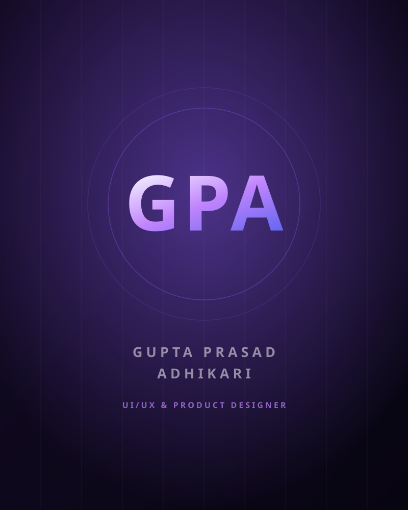
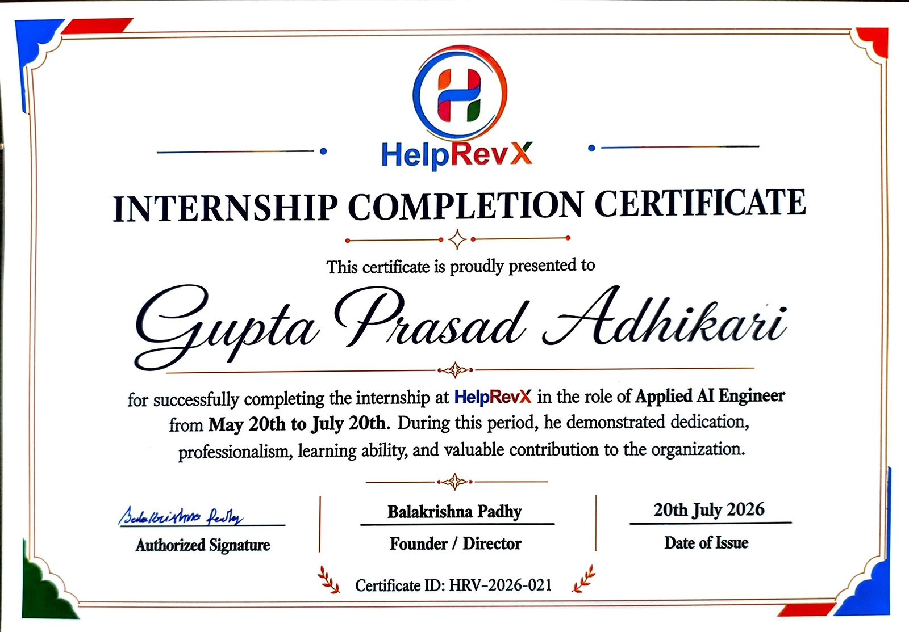

✦ UI/UX Designer · Product Designer · AI Interfaces
I design AI experiences that feel simple, trusted and human.
Industrial Design at NIT Rourkela, applied AI engineering at HelpRevX. I take products from research and wireframes through to the interface that actually ships.
Design & build stack
01 Selected work
Products, interfaces and systems I've shaped.
Explorations
Research & Analysis
Projects built to sharpen the half of design that happens before Figma — understanding a business, interrogating its data, and turning the answer into something a decision-maker can act on.
02 Capabilities
Discovery to delivery, end to end.
-
UX Research
Personas, journey mapping and competitive benchmarking — decisions I can defend with evidence.
-
UI/UX Design
Wireframes through high-fidelity flows and prototypes in Figma, built for developer hand-off.
-
AI Interface Design
Designing how a model shows its working, admits uncertainty, and hands control back to a person.
-
Design Systems
Tokens, components and states documented once so the tenth screen costs less than the first.
-
Data Visualisation
Dashboards where the number a person came for is the first thing they see, not the fifth.
-
Frontend Development
Responsive, accessible, fast — I ship the design rather than handing over a picture of it.
03 About
Gupta Prasad Adhikari
Design decisions I can explain, in products that ship.

I study Industrial Design Engineering at NIT Rourkela — a degree that spends as much time on why a person reaches for something as on what it looks like. That framing is what pulled me toward product and interface design, and it's still how I open every project: understand the user's pain before opening Figma.
At HelpRevX I work as an Applied AI Engineer Intern on two products. On aayiq, an omnichannel customer-experience platform, I built the LLM workflows behind intent classification, knowledge retrieval and escalation to a human agent — which meant designing what the customer sees at each of those moments, not just what the model returns. On Vidyapeeth360 I designed an end-to-end K-12 school ERP and specified its AI capabilities alongside its database architecture and API contracts.
I'm most interested in AI as a design material — how a model explains itself, how it signals uncertainty, and how it supports a decision instead of replacing the person making it. That question runs through everything above, and it's the one I want to keep working on.
- Education
- B.Tech Industrial Design · NIT Rourkela
- Based in
- Rourkela, India
- Design
- Figma · FigJam · Prototyping
- Build
- TypeScript · Python · Next.js
04 Process
From problem to shipped product.
-
01
Discover
Talk to the people who'll use it. Map the journey, name the pain, agree what success looks like.
-
02
Design
Wireframes, then a system — components, states, and the empty and error cases nobody demos.
-
03
Build
Prototype in code. A design I can run is a design I can test, and I catch what static mocks hide.
-
04
Measure
Instrument it, watch real usage, and let the numbers decide what changes in the next pass.
05 Experience & Journey
Where I've designed, built and led.
A timeline of product work, applied AI engineering and student leadership — from campus clubs to shipping features on a live platform.
-
HelpRevX Software Pvt. Ltd.
Applied AI Engineer Intern
Designing and building AI product surfaces on aayiq (omnichannel CX) and Vidyapeeth360 (K-12 school ERP) — LLM workflows for intent, retrieval and human escalation, plus the ERP's information architecture, database design and API specification.
-
April Cohort Hackathon
Winner — YatraAI
Built and won with a constraint-based group itinerary planner and a cited RAG assistant, taking it from problem framing to a working demo inside the cohort window.
-
AXIOM — Mathematics Club, NIT Rourkela
Secretary
Ran problem-solving events for 500+ participants — scoping the format, coordinating the team behind it, and handling everything from promotion to running the day itself.
-
LEO Club
President
Led donation drives and community awareness campaigns, coordinating volunteers and the communication that got people to show up.
-
National Institute of Technology, Rourkela
B.Tech, Industrial Design Engineering
Design-led engineering degree covering human factors, prototyping and manufacturing, alongside machine learning, statistics, DSA and databases. CGPA 7.30.
06 Recognition
Where the work has been recognised.
-
Applied AI Engineer Intern — HelpRevX
Internship at HelpRevX Software Private Limited, working across two live products — building LLM workflows for the aayiq customer-experience platform and specifying the design, data model and AI capabilities of the Vidyapeeth360 school ERP.

-
Winner — April Cohort Hackathon
First place for YatraAI, a constraint-based group itinerary planner with a cited RAG assistant. Judged on the working product: a fair-selection algorithm that lifts the least-satisfied traveller rather than optimising the group average, and a retrieval layer that abstains instead of guessing when the knowledge base can't answer.
Read the case study -
LeetCode — 1605 rating, 450+ problems
Sustained algorithmic practice across dynamic programming, trees, graphs, segment trees and SQL. It's the habit behind the part of my work that isn't visual — being able to reason about what a design costs to build before I hand it over.
View profile
07 Contact
Have a problem worth designing?
I'm looking for product and UX design roles where AI is part of the interface, not just the backend. Let's talk.